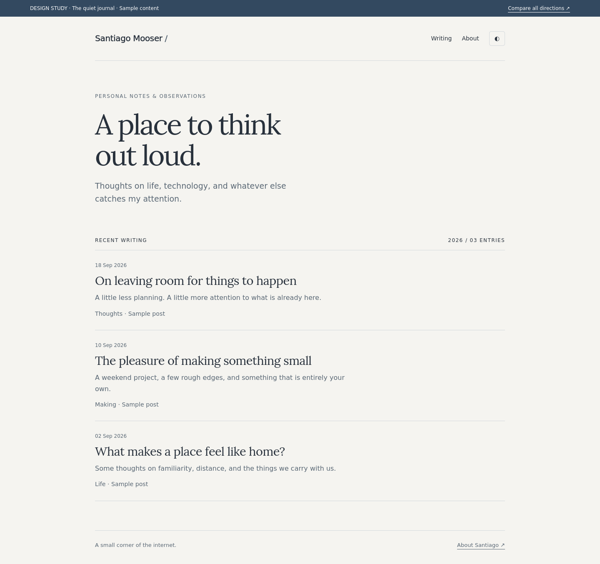
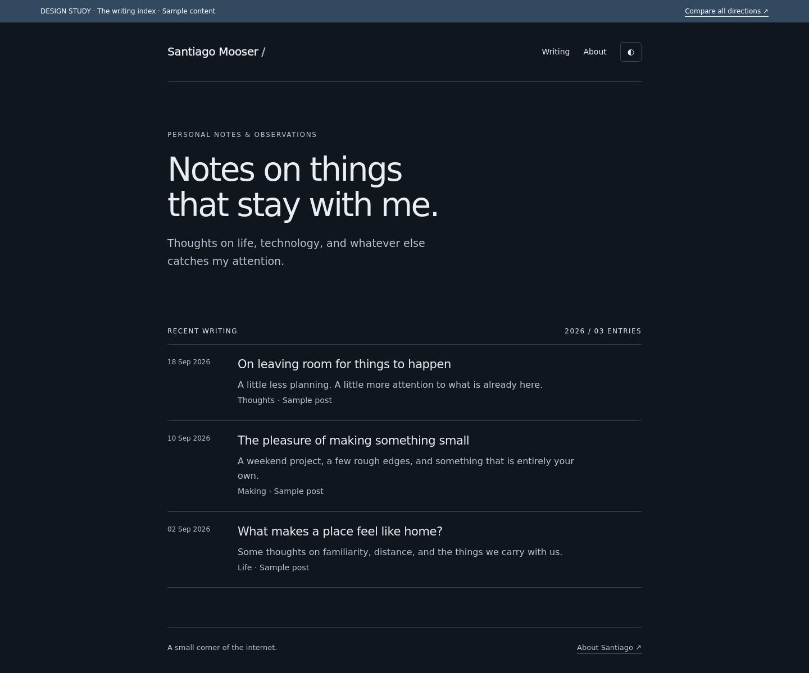
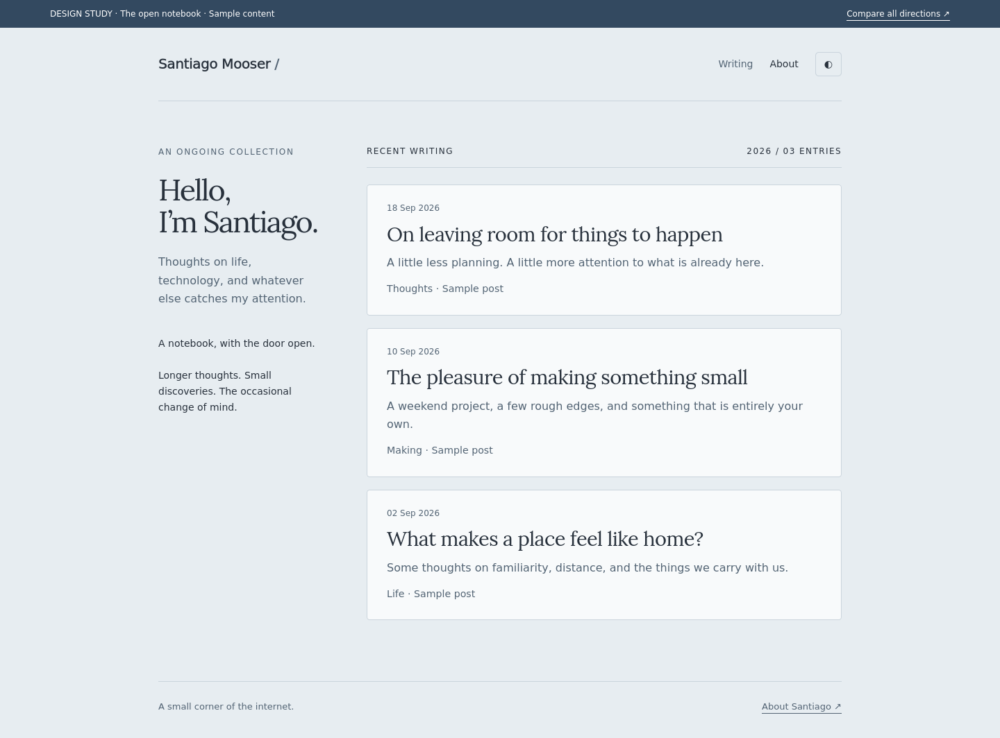

01 / Recommended
The quiet journal
Warm paper, generous spacing and a calm reading rhythm. For essays, observations and speaking your mind.
Inspired by Manu Moreale and Tom MacWright.
Three ways to move from a résumé to a personal home on the internet. The same slate-blue roots, with writing at the centre.

Warm paper, generous spacing and a calm reading rhythm. For essays, observations and speaking your mind.
Inspired by Manu Moreale and Tom MacWright.

A deep slate canvas and a clean dated archive. Your existing dark theme, distilled into a writing-first layout.
Inspired by Guillermo Rauch.

A personal introduction beside a collection of thoughts. For small discoveries, longer pieces and changing interests.
Inspired by Tom MacWright and Manu Moreale.
Write ordinary Markdown, preview it locally, and publish through your existing GitHub workflow. Astro builds the posts into static HTML. Keep the CV available from About; give the homepage to your writing.
Read the full research and publishing proposal ↗
Clickable design specimens, not a production migration. All post text is illustrative. Appearance controls demonstrate light/dark variants; no authoring backend is connected.